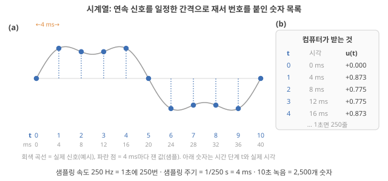
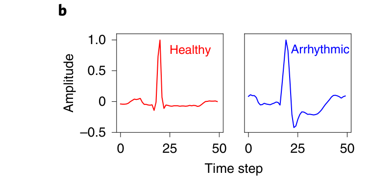
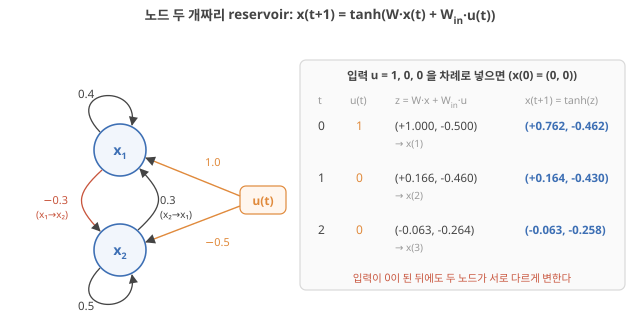
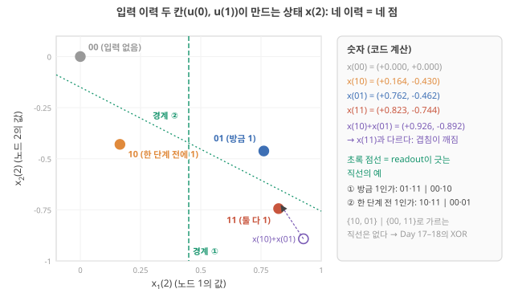
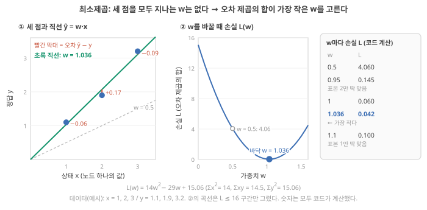
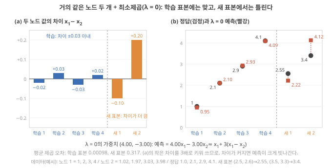
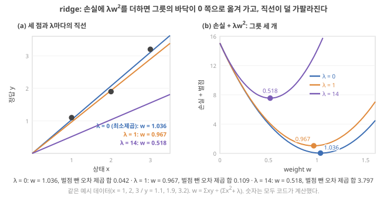
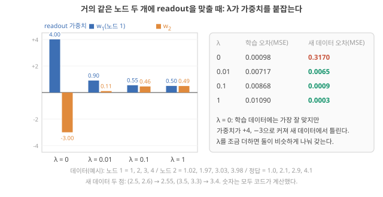
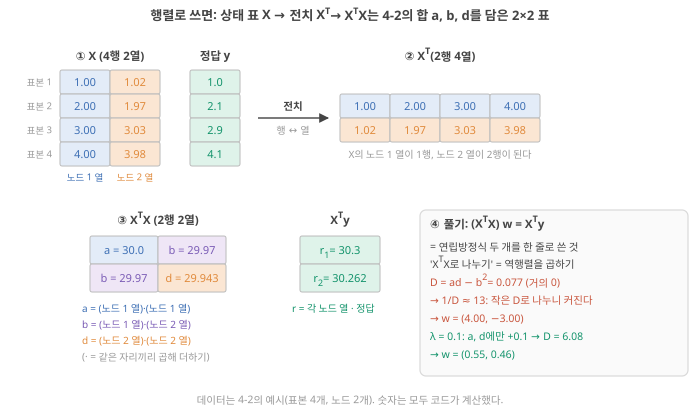
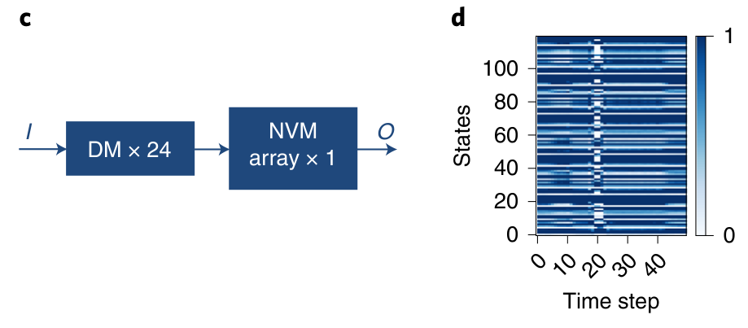

Day 13. state update와 readout 학습: 최소제곱에서 ridge까지
Phase 2 · RC는 왜, 어떻게 작동하는가
이번 질문 — reservoir 상태는 무엇을 담고, readout 가중치는 어떻게 구하나?
왜 배우나 (내 소재 연구와의 연결) — 내 소자의 전류를 일정 간격(예: 4 ms)으로 읽은 값들이 reservoir의 상태 x이고, 그 값들에 곱할 가중치를 구하는 일이 readout training입니다. 오늘 숫자로, 내 소자 N개의 전류가 '거의 같은 노드'라 가중치가 튀는지(ridge의 λ가 필요한지)와 논문의 오차가 학습 데이터 값인지 시험 데이터 값인지를 판단합니다.
오늘의 장면 (입력 → 내부 변화 → 출력) — 입력 시계열 u(t) → 매 시간 단계 state update로 노드 값이 바뀜(지난 상태를 섞고 새 입력을 더한 뒤 tanh) → 상태에 가중치를 곱해 더한 출력 y(t). 학습은 (상태, 정답) 표본에서 오차 제곱의 합이 가장 작은 가중치를 구하는 일이고, ridge는 큰 가중치에 벌점을 줍니다.
오늘 반드시 — t는 초가 아니라 번호(실제 시각 = t × 샘플링 주기)이고, 상태는 지난 입력들의 비선형 함수다. readout 가중치는 오차 제곱 합의 바닥(least squares)이고, 노드가 거의 같으면 가중치가 +4, −3처럼 튀므로 ridge의 λ가 필요하다.
나중에 더 봐도 되는 것 — 전치·역행렬로 쓰는 행렬 표기(4-4)와 2×2 역행렬 확인(심화 접기). 처음에는 노드 하나·둘짜리 손 계산(4-1–4-3)만 따라가면 됩니다.
다음으로 넘어가는 기준 — '오늘 반드시'를 내 말로 한두 문장 말할 수 있으면 됩니다. 나머지는 뒤의 Day에서 다시 나옵니다.
이후 쓰이는 곳 — Day 15–16 fading memory, Day 17–18 XOR, Day 19–20 '서로 다른' 노드, Day 21–22 ESN 실습. 비슷한 소자 노드가 정보를 늘리는지, λ가 필요한지 판단에 쓰임
지난 학습 복습
지난 학습 단위(Day 12 · ESN·LSM과 물리 reservoir computing)의 핵심을 다른 예로 확인합니다. 고르는 즉시 맞았는지와 이유가 보입니다. 틀려도 아래 학습자료는 그대로 열려 있고, 틀린 문제에는 다시 볼 곳이 붙습니다.
사전 테스트 (선택)
사전 테스트 펼치기 · 배우기 전에 짐작해 보는 문제 (선택)
학습자료
지난 학습(Day 11–12)는 "RNN(상태를 다음 시간 단계로 넘기는 신경망)은 내부를 학습시키기 어렵고, ESN(echo state network, 내부를 난수로 고정한 RNN)은 내부를 그대로 둔 채 출력층(readout, 상태에 가중치를 곱해 답을 내는 마지막 한 층)만 학습해서 그 어려움을 피했다"까지 왔습니다. 이 방식을 통틀어 reservoir computing(RC)이라 부르고, 고정된 내부를 reservoir라고 부른다는 것도 보았습니다(Day 12 3구간). 그런데 이 문장에는 두 개의 빈칸이 남아 있습니다. 고정된 난수 네트워크의 '상태'라는 것이 도대체 무엇을 담고 있길래 마지막 한 층만 고쳐도 답이 나오는가, 그리고 그 마지막 한 층은 구체적으로 어떻게 학습하는가. 오늘은 Day 11–12의 작은 예에서 이어 가며 이 두 빈칸을 숫자로 채웁니다. 앞을 알아야 뒤가 읽히니 순서대로 가세요.
이번 주제에서 답할 질문 — 아래 학습 구간들이 차례로 답합니다.
- reservoir에 들어가는 입력, 즉 "시계열"은 어떻게 생긴 숫자인가? (1초에 250번 재면 무엇이 생기나)
- state update식 \(x(t+1) = f(W x(t) + W_{in} u(t))\)는 실제로 어떤 계산인가? (Day 11–12의 두 칸 예를 '서로 섞이는' 노드 두 개로 바꿔 손 계산)
- 그렇게 만든 상태는 무엇을 뜻하나? 왜 "입력 이력의 비선형 전개"라고 부르나?
- readout은 어떻게 학습하나? Day 11–12에서 식 두 개로 풀던 것이 표본이 많아지면 왜 최소제곱이 되고, 왜 ridge라는 규제항을 더하나?
- 답이 '종류'(분류)일 때 readout은 무엇을 내나(softmax)? 한 번에 푸는 길과 조금씩 내려가는 길(경사 하강·Adam)은 언제 쓰나?
- 그래서 왜 고정해도 되고, 언제는 고정하면 안 되나?
1. 시계열: reservoir가 받는 숫자는 어떻게 생겼나
이 구간을 읽고 나면 "1초에 250번 잰다"는 말을 샘플링 속도·샘플링 주기·시간 단계라는 세 단어로 풀어 말할 수 있고, 700 ms짜리 심전도 한 박동이 몇 개의 숫자가 되는지 계산할 수 있다.
상황. 내 소자에 4 ms마다 전압 펄스를 넣고 그때마다 전류를 읽으면, 연속 곡선이 아니라 '번호 붙은 전류 숫자 목록'이 남습니다. reservoir의 식이 받는 것은 이 목록뿐이므로, 목록의 몇 번째가 몇 ms인지부터 정해야 합니다.
Day 11–12에서 RNN은 "시간 순서로 들어오는 신호"를 다룬다고 했고, 식의 \(t\)를 '시간 단계(정수, 샘플 번호)'라고만 적었습니다(Day 11 1구간). 오늘 식에 나오는 \(u(t)\)의 \(t\)가 실제로 몇 ms인지부터 정해 둡니다. 이것을 정하지 않으면 뒤에서 "한 단계 전", "10단계 전"이라는 말이 몇 ms 전인지 알 수 없습니다. Day 10 사다리로 말하면 1단, 과제에서 입력을 무엇으로 정하느냐의 일입니다(Day 10 2-2).
시계열·샘플링·샘플링 주기·시간 단계
왜 필요한가. 심장의 전기 신호, 손가락의 압력, 소자에 흐르는 전류는 모두 시간에 따라 연속적으로 변합니다. 그런데 컴퓨터(그리고 reservoir 식)는 연속 곡선을 그대로 다루지 못하고 숫자 목록만 다룹니다. 그래서 곡선을 일정한 간격으로 "찍어서" 숫자 목록으로 바꿉니다.
무엇인가. 연속 신호를 일정한 시간 간격마다 재는 일을 샘플링(sampling)이라 하고, 잰 값 하나하나를 샘플(sample)이라고 부릅니다. 1초에 몇 번 재는지가 샘플링 속도(sampling rate, 단위 Hz = 1/s)이고, 두 번 잴 때 사이의 시간이 샘플링 주기(sampling period, 단위 s)입니다. 둘은 서로 역수입니다. (Day 10에서 쓴 '표본'(입력 하나와 정답의 한 쌍)도 영어로는 sample이지만 다른 것을 가리킵니다. 4구간에서 다시 구분합니다.)
\[ \text{샘플링 주기} = \frac{1}{\text{샘플링 속도}} \]
작은 숫자로. 1초에 250번 재면(250 Hz) 샘플링 주기는 \(1/250\) s = 0.004 s = 4 ms입니다. 0 ms, 4 ms, 8 ms, 12 ms, …에 값을 하나씩 얻습니다. 1초 녹음이면 숫자 250개, 10초면 2,500개입니다. 이렇게 시간 순서대로 늘어선 숫자 목록을 시계열(time series)이라고 부릅니다.
이제 각 숫자에 0, 1, 2, 3, …이라는 번호를 붙입니다. 이 번호가 시간 단계(time step) \(t\)입니다. \(u(0)\)은 0 ms에 잰 값, \(u(1)\)은 4 ms에 잰 값, \(u(3)\)은 12 ms에 잰 값입니다. 식 안의 \(t\)는 초가 아니라 번호이고, 실제 시각은 "\(t\) × 샘플링 주기"로 바꿔야 나옵니다. 그래서 "10단계 전"은 250 Hz에서는 40 ms 전이고, 10 Hz에서는 1초 전입니다. 같은 식, 같은 "10단계"라도 실제 시간은 샘플링 속도에 따라 25배 다릅니다.

실제 논문의 숫자. 폴더의 Zhong 2022(Nat. Electron.; memristor, 즉 흘러간 전류의 이력에 따라 저항이 변하는 소자로 reservoir를 만들고, 값을 0·1로 바꾸지 않은 연속 전압·전류 그대로(아날로그, Day 3 기초) 계산한 RC 시스템)는 부정맥 검출 과제에서 심전도 파형을 72 Hz로 다시 샘플링하고 한 박동씩 700 ms로 잘라, 박동 하나가 50개 시간 단계가 되게 했습니다. Zhong 2022, p.675 계산해 보면 0.7 s × 72 /s = 50.4이니 약 50개입니다. 같은 논문의 손동작 인식 과제는 가속도 센서 신호를 10 Hz로 기록해 동작 하나(3 s)를 30개 시간 단계로 만들었습니다. Zhong 2022, p.677
읽는 법. 아래 원문 그림의 가로축 "Time step"이 이 절의 시간 단계 \(t\)입니다. 0부터 50까지가 한 박동(약 700 ms)이고, 72 Hz이므로 눈금 하나(1단계)는 약 14 ms입니다. 곡선처럼 보이지만 실제로는 점 50개를 이은 것이고, reservoir에 들어가는 것은 이 점 50개의 숫자 목록입니다.

어디서 깨지나. 샘플링 주기가 너무 길면 그 사이에 일어난 빠른 변화를 놓칩니다(그림 1(a)에서 점 사이의 굴곡). 너무 짧으면 숫자가 많아져 계산·저장 비용이 커지고, 소자의 응답이 다음 샘플 전에 거의 변하지 않아 같은 값이 반복됩니다. 그래서 샘플링 주기는 "신호가 변하는 속도"와 "소자가 반응하고 잊는 속도" 사이에서 고릅니다. 이것이 Day 12 4구간의 Stepney 시간척도 조건 Stepney 2024, p.673을 숫자로 옮긴 것이고, Day 15–16·Day 23–24에서 다시 씁니다.
72 Hz로 샘플링하면 샘플링 주기는 몇 ms일까요? 그리고 3초짜리 손동작을 10 Hz로 재면 숫자가 몇 개일까요? 먼저 계산하고 아래에서 확인하세요.
- 샘플링 = 연속 신호를 일정 간격으로 재기. 샘플링 속도(Hz)와 샘플링 주기(s)는 역수: 250 Hz ↔︎ 4 ms.
- 시계열 = 시간 순서로 늘어선 샘플 목록. 시간 단계 \(t\)는 번호이고, 실제 시각 = \(t\) × 샘플링 주기.
- 예: 심전도 72 Hz, 한 박동 700 ms ≈ 50단계 Zhong 2022, p.675; 손동작 10 Hz, 3 s = 30단계 Zhong 2022, p.677.
- 남은 질문: 이 숫자 목록이 reservoir에 들어가면 상태는 어떻게 바뀌나? → 2구간.
2. state update식을 손으로 돌리기: 노드 두 개
이 구간을 읽고 나면 \(x(t+1) = \tanh(W x(t) + W_{in} u(t))\)를 노드 두 개짜리 예로 세 단계 손 계산할 수 있고, 식의 각 부분(지금 상태의 섞임, 새 입력, S자 함수)이 무슨 일을 하는지 말할 수 있다.
Day 11–12의 예에서 이어서. Day 11 1구간에서 상태가 숫자 하나인 RNN \(h(t+1) = \tanh(0.5\,h(t) + u(t))\)를 손으로 돌렸고(0.762 → 0.363 → 0.180), 상태 두 개짜리도 돌렸습니다. 그때의 \(W\)는 행 1 = (0.5, 0), 행 2 = (0, 0.9)로 대각선 밖이 0이라, 두 칸이 서로 섞이지 않고 각자 다른 속도로 잊기만 했습니다(0.762 → 0.363 → 0.180과 0.762 → 0.595 → 0.490, Day 11 1구간). 그리고 Day 11–12 3-1에서는 그 RNN을 고정한 채 readout만 맞췄습니다. 오늘은 대각선 밖에도 숫자를 넣어 칸끼리 서로 영향을 주게 합니다. 이것이 reservoir에서 보통 쓰는 모양이고, 두 개면 그 효과가 처음으로 보이며, 세 개 이상은 같은 계산의 반복입니다.
이름 두 개만 바꿉니다. (1) Day 11–12에서 상태를 \(h(t)\)로 썼는데, reservoir 문헌(Stepney 튜토리얼, 그리고 Day 15–16 이후)은 \(x(t)\)로 쓰는 경우가 많아 오늘부터 \(x(t)\)로 씁니다. 뜻은 같습니다. (2) 상태 목록의 칸 하나, 곧 "숫자 하나를 들고 다음 단계로 넘기는 단위"를 노드(node)라 부릅니다. Day 11–12의 '상태 두 칸'이 오늘의 '노드 두 개'입니다.
먼저 필요한 앞날 개념을 짧게 되짚습니다. 모델은 입력에 가중치를 곱해 출력을 내는 규칙이고, 숫자 목록이 벡터(vector), 가중치를 행·열로 늘어놓은 표가 행렬(matrix), 표 안의 숫자 하나가 원소(element)이며, 행렬–벡터 곱은 "행 하나와 입력을 같은 자리끼리 곱해 더하기"였습니다(Day 11 기초: 벡터·행렬). \(\tanh\)는 어떤 수가 들어와도 −1과 1 사이로 눌러 주는 S자 함수입니다(\(\tanh(1) = 0.762\), Day 11 그림 3).
state update식 \(x(t+1) = f(W x(t) + W_{in} u(t))\)를 숫자로
왜 필요한가. reservoir가 "입력을 받아 상태를 만든다"는 말은 이 식 하나로 정해집니다. 식을 손으로 한 번 돌려 보면, 상태가 무엇으로 만들어지는지(지금 입력 + 지난 상태의 섞임)가 눈에 보입니다.
기호와 단위.
- \(u(t)\): 시간 단계 \(t\)의 입력(1구간의 샘플). 오늘 예에서는 0 또는 1. 무차원.
- \(x(t) = (x_1(t), x_2(t))\): 노드 두 개의 상태 값 목록(벡터). 무차원.
- \(W\): 노드끼리의 연결 세기를 적은 2×2 표. \(W[i, j]\)는 "노드 \(j\)의 지금 값이 노드 \(i\)의 다음 값에 얼마나 들어가나". 오늘 예: \(W = \begin{pmatrix} 0.4 & 0.3 \\ -0.3 & 0.5 \end{pmatrix}\). 대각선(diagonal: 왼쪽 위에서 오른쪽 아래로 놓인 0.4, 0.5)은 자기 자신의 값이 얼마나 남나, 대각선 밖(0.3, −0.3)은 다른 노드의 값이 얼마나 섞여 들어오나입니다. Day 11–12의 표는 대각선 밖이 0이었습니다.
- \(W_{in}\): 입력이 각 노드에 들어가는 세기. 오늘 예: \(W_{in} = (1.0, -0.5)\).
- \(f\): 비선형 함수. 오늘은 \(\tanh\).
계산 순서. (1) 지금 상태에 \(W\)를 곱한다(노드끼리 섞기) → (2) 지금 입력에 \(W_{in}\)을 곱해 더한다(새 입력 넣기) → (3) 그 합 \(z\)를 노드마다 \(\tanh\)에 넣는다(−1과 1 사이로 누르기) → (4) 결과가 다음 상태. 다음 입력으로 (1)부터 반복.
결과의 뜻. 다음 상태는 "새 입력"과 "지난 상태를 섞은 것"의 합을 S자로 누른 것입니다. 지난 상태는 그 전 입력들이 만든 것이므로, 반복할수록 상태에는 여러 시간 단계의 입력이 섞여 들어갑니다.
그림 읽는 법. 그림 2(a)는 위의 기호를 화살표로 그린 것입니다. 동그라미 두 개가 노드 \(x_1\), \(x_2\)이고, 자기 자신으로 돌아오는 화살표의 숫자가 \(W\)의 대각선(0.4, 0.5), 두 노드를 잇는 화살표가 대각선 밖(0.3: \(x_2\)에서 \(x_1\)로, −0.3: \(x_1\)에서 \(x_2\)로), 주황 화살표가 \(W_{in}\)입니다. (b)의 표는 입력 1, 0, 0을 넣었을 때 단계마다의 합 \(z\)와 다음 상태(파랑)입니다. 아래 단계 1–4가 표의 세 줄을 하나씩 채웁니다.

입력 \(u = 1, 0, 0\)을 차례로 넣습니다. 처음 상태는 \(x(0) = (0, 0)\)입니다.
단계 1 — \(t = 0\), 입력 1. 지금 상태가 (0, 0)이라 \(W x(0) = (0, 0)\). 입력 항은 \(W_{in} \times 1 = (1.0, -0.5)\). 합 \(z = (1.0, -0.5)\). 노드마다 \(\tanh\): \(\tanh(1.0) = 0.762\), \(\tanh(-0.5) = -0.462\). 그래서 \(x(1) = (0.762, -0.462)\). 같은 입력 1이 노드 1은 위로, 노드 2는 아래로 밀었습니다(\(W_{in}\)의 부호가 달라서).
단계 2 — \(t = 1\), 입력 0: 노드 1의 섞기. 행 1은 (0.4, 0.3). \(0.4 \times 0.762 + 0.3 \times (-0.462) = 0.305 - 0.139 = 0.166\). 입력이 0이니 입력 항은 0. \(z_1 = 0.166\).
단계 3 — 노드 2의 섞기. 행 2는 (−0.3, 0.5). \(-0.3 \times 0.762 + 0.5 \times (-0.462) = -0.229 - 0.231 = -0.460\). \(z_2 = -0.460\). 그래서 \(z = (0.166, -0.460)\)이고, \(\tanh\)를 거치면 \(x(2) = (0.164, -0.430)\). 입력은 0이었는데 상태는 0이 아닙니다. 한 단계 전 입력 1의 흔적입니다.
단계 4 — \(t = 2\), 입력 0. 행 1: \(0.4 \times 0.164 + 0.3 \times (-0.430) = 0.066 - 0.129 = -0.063\). 행 2: \(-0.3 \times 0.164 + 0.5 \times (-0.430) = -0.049 - 0.215 = -0.264\). \(\tanh\)를 거쳐 \(x(3) = (-0.063, -0.258)\). 노드 1은 부호가 바뀌었고 노드 2는 천천히 줄어듭니다. 두 노드가 같은 과거를 서로 다른 모양으로 들고 있습니다.
정리. 노드 하나짜리(Day 11–12)에서는 흔적이 한 가지 모양(0.762 → 0.363 → 0.180)으로만 줄었고, Day 11–12의 섞이지 않는 두 칸은 각자 한 가지 속도로만 줄었습니다. 노드가 둘이고 서로 섞이면, 같은 입력의 흔적이 노드마다 다른 속도·다른 부호로 남습니다. 노드가 200개면 200가지 모양의 흔적이 생기고, 그 다양함이 3·6구간에서 readout이 쓰는 재료가 됩니다.
여기까지: 그림 2의 표를 손으로 채우며 \(x(1) = (0.762, -0.462)\), \(x(2) = (0.164, -0.430)\)을 계산하고, 입력이 0인데도 상태가 남는 이유(\(W\)가 지난 상태를 섞어 넘김)를 말할 수 있다. 다음: 같은 계산을 직접 바꿔 보는 실험과 노드 \(N\)개의 일반식.
직접 바꿔 보기: 입력 → 상태 → 출력
위 손계산과 같은 노드 두 개(\(W\), \(W_{in}\), tanh)를 컴퓨터가 계산합니다. 입력 순서, 입력 세기, 노드끼리 섞는 세기(\(W\) 배율)를 바꾸며 상태가 무엇으로 만들어지는지 봅니다. 먼저 예상을 고르세요.
교육용 모형입니다. 본문 손계산의 작은 ESN(노드 2개)이며 실제 소자 reservoir가 아닙니다. 예시 출력 y = x₁ − x₂의 가중치는 설명용으로 고른 값입니다. 입력은 0/1, 입력 세기 ×0.5–4, W 배율 ×0–2.
정적 예제. 입력 1, 0, 0, 0, 0, 0 (본문과 같은 설정)
| t | x₁(t) | x₂(t) |
|---|---|---|
| 1 | 0.762 | −0.462 |
| 2 | 0.164 | −0.430 |
| 3 | −0.063 | −0.258 |
| 4 | −0.102 | −0.110 |
| 5 | −0.074 | −0.024 |
W를 0으로 두면 t = 2부터 상태가 (0, 0)입니다.
무슨 일이 있었나. 입력은 t = 0에 한 번뿐인데 상태는 그 뒤로도 0이 아닙니다. \(W\)가 지난 상태를 다음 상태로 섞어 넘기기 때문이고, 그 값은 점점 작아집니다(fading memory, Day 15–16). \(W\)를 0으로 두면 이 넘김이 없어 기억도 사라집니다. 입력 세기를 4배로 올려도 상태는 4배가 되지 않습니다. tanh가 1 근처에서 눌러 주기 때문입니다(비선형, 포화(saturation)). readout은 이렇게 만들어진 상태를 받아 곱해 더할 뿐이므로, 과제에 필요한 과거 정보가 상태에 남아 있어야 답할 수 있습니다.
- 입력 세기 1 → 4이면 x₁(1)은?
답
tanh(4) ≈ 0.999. 1을 넘지 못합니다. - W = 0, 입력 1, 0, 0이면 x(2)는?
답
(0, 0). 지난 상태를 넘겨 줄 W가 없습니다.
일반식. 노드가 \(N\)개, 입력이 하나면 \(W\)는 \(N \times N\) 표, \(W_{in}\)은 숫자 \(N\)개 목록이고, 노드 \(i\)의 다음 값은
\[ x_i(t+1) = \tanh\!\Big(\sum_{j=1}^{N} W[i,j]\, x_j(t) + W_{in}[i]\, u(t)\Big) \]
- 왜 지금 필요한가: 위 단계 2–3을 노드 수와 상관없이 한 줄로 쓰기 위해.
- 기호: \(\sum_j\)는 "모든 노드 \(j\)에 대해 더하라". 나머지는 위의 기초 계단과 같다.
- 단위: 모두 무차원(정규화한 값).
- 계산 순서: 노드 \(i\)마다 (행 \(i\)와 지금 상태를 자리끼리 곱해 더하기) + (입력 × \(W_{in}[i]\)) → \(\tanh\).
- 결과의 뜻: 노드 \(i\)의 다음 값 = 모든 노드의 지금 값과 지금 입력을 노드 \(i\)만의 비율로 섞어 누른 것.
Liang 리뷰의 식 (1)도 같은 꼴이며, 입력과 되먹임에 크기 조절 계수 \(a\), \(b\)를 붙여 \(s(n) = f[a W_{in} u(n) + b W_{res} s(n-1)]\)로 씁니다. 리뷰는 \(W_{res}\)와 \(W_{in}\)은 보통 난수로 만들고, 학습하는 것은 \(W_{out}\)뿐이라고 적습니다. Liang 2024, p.194 Stepney 튜토리얼의 식 1도 같고, 저자에 따라 \(u(t)\) 대신 \(u(t+1)\)을 쓰는 등 첨자만 조금 다른 변형이 있다고 밝힙니다. Stepney 2024, p.668 Day 21–22의 실습 코드는 \(u(t+1)\) 쪽 변형을 씁니다. 결과의 뜻은 같습니다.
같은 reservoir에 입력을 \(u = 1, 1\)로 넣으면 \(x(2)\)의 첫째 값 \(z_1\)은 얼마일까요? 단계 2의 섞기 결과(0.166)에 무엇이 더해지는지 생각해 보세요. 아래 점검의 첫 문제는 단계 1의 확인, 둘째는 일부가 빈 문제, 셋째는 입력이 다른 새 문제입니다.
- state update = (지금 상태를 \(W\)로 섞기) + (지금 입력 × \(W_{in}\)) → \(\tanh\)로 누르기. 매 단계 같은 \(W\), \(W_{in}\)을 쓴다.
- Day 11–12의 두 칸은 대각선 밖이 0이라 섞이지 않았고, 오늘의 \(W\)는 대각선 밖(0.3, −0.3)으로 노드끼리 섞는다.
- 예: \(u = 1, 0, 0\) → \(x(1) = (0.762, -0.462)\), \(x(2) = (0.164, -0.430)\), \(x(3) = (-0.063, -0.258)\). 입력이 0이어도 흔적이 남는다.
- 노드가 여럿이면 같은 과거가 노드마다 다른 모양으로 남는다. 이 다양함이 readout의 재료다. \(W\), \(W_{in}\)은 난수로 만들고 학습하지 않는다 Liang 2024, p.194.
3. 내부 상태는 무엇을 뜻하나: 입력 이력의 비선형 전개
이 구간을 읽고 나면 "상태 = 입력 이력의 비선형 전개"를 네 가지 입력 이력(00, 10, 01, 11)이 만드는 네 점으로 설명하고, superposition principle이 깨지는 것을 숫자로 보이며, 상태가 담지 못하는 것이 무엇인지 말할 수 있다.
2구간에서 상태가 "여러 시간 단계의 입력이 섞인 것"이라고 했습니다. 이 말을 정확히 하려면, 서로 다른 입력 이력을 넣고 상태가 어떻게 달라지는지 직접 비교하면 됩니다.
reservoir의 내부 상태 = 입력 이력의 비선형 전개
왜 필요한가. readout은 상태만 봅니다. 그러니 "상태에 무엇이 들어 있나"가 곧 "readout이 무엇을 할 수 있나"의 한계입니다. 상태에 없는 정보는 어떤 readout도 꺼내지 못합니다.
무엇인가. 2구간의 식을 거꾸로 펼쳐 봅니다. 지금 상태 \(x(t)\)는 바로 전 상태 \(x(t-1)\)과 그때 들어온 입력 \(u(t-1)\)로 정해지고, \(x(t-1)\)은 다시 \(x(t-2)\)와 \(u(t-2)\)로 정해지고, … 결국
\[ x(t) = F\big(u(t-1),\, u(t-2),\, u(t-3),\, \dots\big) \]
처럼 지난 입력들의 함수입니다. \(F\)는 \(W\), \(W_{in}\), \(\tanh\)가 정하는 고정된 규칙입니다. "입력 이력의 전개"는 이 뜻입니다. 지난 입력 목록을 노드 \(N\)개의 값으로 펼쳐 적은 것입니다. 그리고 \(F\) 안에 \(\tanh\)가 있으므로, \(F\)는 입력들을 단순히 가중치 곱해 더한 것이 아닙니다. 그래서 비선형 전개입니다.
두 가지 단서. (1) 펼쳐 적었다고 지난 입력을 전부 담는 것은 아닙니다. 오래된 입력의 흔적은 작아지고(Day 15–16의 fading memory), 노드가 \(N\)개면 서로 독립인 정보도 많아야 \(N\)가지입니다(Day 19–20). (2) "담겨 있다"는 것은 수학적으로 0이 아니라는 뜻이 아니라, 잡음보다 크게, 다른 이력과 구별되게 남았다는 뜻이어야 쓸모가 있습니다(Day 10의 "읽을 수 있는 상태" Day 10 기초).
네 가지 이력, 네 점. 2구간의 reservoir에 입력 두 칸 \((u(0), u(1))\)을 넣고 \(x(2)\)를 봅니다. 가능한 이력은 00, 10, 01, 11의 네 가지입니다(왼쪽 숫자가 먼저 들어간 것).
그림 읽는 법. 그림 3의 가로축은 입력 두 칸을 넣은 뒤 노드 1의 값 \(x_1(2)\), 세로축은 노드 2의 값 \(x_2(2)\)이고, 점 하나가 이력 하나입니다. 지금은 "네 점이 모두 다른 자리에 있다"만 확인하세요. 보라색 빈 원은 "시스템이 선형이었다면 11이 있었을 자리"입니다. 여기서 선형(linear)은 update식에 \(\tanh\)가 없어 곱하고 더하기만 하는 것이고, 선형 시스템에서는 두 입력을 함께 넣은 결과가 따로 넣은 결과의 합과 같습니다(superposition principle). 아래 단계 5에서 숫자로 확인합니다. 초록 점선 두 개는 그 아래 'readout은 직선을 긋는 일'에서 씁니다.

단계 1 — 00. 아무것도 안 들어왔으니 \(x(2) = (0, 0)\).
단계 2 — 10 (한 단계 전에 1). 2구간 단계 3 그대로 \(x(2) = (0.164, -0.430)\).
단계 3 — 01 (방금 1). \(x(1) = (0, 0)\)이고 그다음 입력 1이 들어오니, 2구간 단계 1과 같은 계산으로 \(x(2) = (0.762, -0.462)\).
단계 4 — 11 (둘 다 1). \(x(1) = (0.762, -0.462)\)에서 섞기 결과는 단계 2–3과 같은 \((0.166, -0.460)\)이고, 여기에 새 입력 \(W_{in} \times 1 = (1.0, -0.5)\)가 더해져 \(z = (1.166, -0.960)\). \(\tanh\)를 거쳐 \(x(2) = (0.823, -0.744)\).
단계 5 — superposition principle 검사. \(\tanh\)를 빼면 update식은 \(x(t+1) = W x(t) + W_{in} u(t)\)로 곱하고 더하기만 남습니다(선형). 선형이면 superposition principle, 곧 "함께 넣은 결과 = 따로 넣은 결과의 합"이 성립해야 합니다. \(\tanh\)를 뺀 식으로 확인하면 \(x(10) = (0.25, -0.55)\), \(x(01) = (1.0, -0.5)\), \(x(11) = (1.25, -1.05)\)로 정확히 \(x(10) + x(01) = x(11)\)입니다. 이제 \(\tanh\)가 있는 원래 식으로 같은 검사를 합니다. \(x(10) + x(01) = (0.164 + 0.762,\; -0.430 - 0.462) = (0.926, -0.892)\)인데, 실제 \(x(11) = (0.823, -0.744)\)입니다(그림 3의 보라색 빈 원과 빨간 점). 차이 \((-0.103, +0.148)\)은 "두 입력이 함께 1이었다"는 사실이 따로 남긴 흔적이고, 이것이 비선형 전개의 덤입니다. 입력 두 개의 곱(둘 다 1인가?) 같은 정보가 상태에 섞여 들어간 것입니다.
네 점이 모두 다른 자리에 있으므로 이 reservoir의 상태는 "최근 두 입력"을 구별합니다. Day 10 사다리 2단(읽을 수 있는 상태)의 첫 조건입니다. 여기서는 시뮬레이션이라 같은 입력에 늘 같은 상태가 나오지만(반복 가능), 소자라면 이것도 반복 측정으로 보여야 합니다(Day 10 기초 2).
여기까지: 그림 3의 네 점이 어떤 이력에서 왔는지 말하고, \(x(10) + x(01) \neq x(11)\)로 superposition principle이 깨지는 것을 숫자로 보일 수 있다. 다음: readout이 이 평면에서 하는 일(직선 긋기)과 그 한계.
readout은 이 평면에 직선을 긋는 일이다. Day 10의 readout(Day 10 기초 3)은 상태에 가중치를 곱해 더한 값으로 답을 냈고, Day 11–12 3-1의 readout도 \(y = w_a h_a + w_b h_b\)였습니다. 여기에 상수 하나 \(w_0\)(상태와 상관없이 늘 더하는 수)를 붙여 \(y = w_0 + w_1 x_1 + w_2 x_2\)로 씁니다. 답을 "0.5보다 크면 예"로 읽으면, 이것은 평면에 직선 하나를 그어 양쪽으로 나누는 일입니다. 왜 직선인가: 경계, 즉 \(y\)가 정확히 0.5인 점들은 \(w_0 + w_1 x_1 + w_2 x_2 = 0.5\)를 만족하는데, 이것은 \(x_1\), \(x_2\)의 1차식이라 평면에서 직선입니다. 예를 들어 \(w_0 = 0.05\), \(w_1 = 1\), \(w_2 = 0\)이면 경계는 \(x_1 = 0.45\)인 세로선(그림 3의 경계 ①)이고, 그 오른쪽 점은 \(y > 0.5\)('예'), 왼쪽 점은 '아니오'입니다. 가중치를 바꾸면 이 직선의 기울기와 위치가 바뀔 뿐, 굽은 선이 되지는 않습니다. 그림 3에서 몇 가지 질문을 해 봅니다.
- "방금 들어온 입력이 1인가?"(01, 11 대 00, 10): \(x_1\)이 0.762, 0.823 대 0, 0.164이니 경계 ① 하나로 나뉩니다. 가능.
- "한 단계 전 입력이 1인가?"(10, 11 대 00, 01): 00과 01을 잇는 선 바로 아래에 10과 11이 모두 있으므로, 그 선을 조금 내린 직선(그림 3의 경계 ②)으로 나뉩니다. 가능. 상태에 과거가 담겨 있다는 증거입니다.
- "두 입력이 서로 다른가?"(10, 01 대 00, 11): 00–11을 잇는 선분과 10–01을 잇는 선분이 서로 엇갈립니다. 직선 하나로는 못 나눕니다. 직선이 00과 11을 한쪽에 두면 둘을 잇는 선분 전체도 그쪽에 있고, 10과 01을 반대쪽에 두면 그 선분 전체도 반대쪽에 있어야 하는데, 두 선분이 한 점에서 만나므로 그 점이 양쪽에 동시에 있을 수는 없기 때문입니다. 이 reservoir는 비선형인데도 이 질문에는 답하지 못합니다.
셋째 질문이 XOR이라는 유명한 문제이고, Day 17–18의 주제입니다. 오늘 챙길 것은 하나입니다. "비선형이다"와 "readout이 원하는 답을 꺼낼 수 있다"는 다른 말입니다. 노드 두 개, 이 \(W\), 이 \(W_{in}\)으로는 셋째 질문에 필요한 차이가 직선으로 가를 수 있는 모양으로 남지 않았습니다. 노드를 늘리거나 \(W_{in}\)을 바꾸면 달라질 수 있고, 그것을 확인하는 방법이 held-out 성능(학습에 쓰지 않은 데이터에서 잰 성능, Day 10 기초)입니다. 해석
Liang은 이 생각을 이렇게 씁니다. reservoir 층의 목적은 저차원 입력을 고차원 특징 공간(feature space)으로 비선형 사상(nonlinear mapping)하는 것이고, 그래서 상태는 고차원 공간에서 서로 다른 입력 정보를 잘 가르도록 "선형적으로 얽히지 않은(linearly uncoupled) 동역학"을 제공해야 한다. Liang 2024, p.194 여기서 "선형적으로 얽히지 않은"은 노드들이 서로의 복사본이거나 단순한 배수가 아니어야 한다는 뜻입니다(4구간의 '거의 같은 노드'가 그 반대 경우이고, Day 19–20에서 숫자로 봅니다). Stepney는 난수 가중치가 입력을 고차원 공간으로 무작위 사상(random mapping)하고, 그래서 학습한 선형 출력으로 원하는 분리가 가능해지지만, 어떤 사상은 다른 사상보다 낫고 그것은 과제에 따라 다르다고 씁니다. Stepney 2024, p.668
"상태 하나에 입력의 과거 전체가 담긴다" — 수학적으로는 지난 입력이 모두 \(F\)의 재료이지만, 실제로 읽을 수 있게 남는 것은 최근 입력의 일부 정보입니다. 오래된 입력의 흔적은 작아지고(Day 15–16), 노드 수만큼의 독립 정보만 담기며(Day 19–20), 잡음보다 작은 차이는 없는 것과 같습니다. 과제에 필요한 차이가 읽을 수 있는 상태들에 남았는지는 학습한 readout이 새 데이터에서 답을 가르는지로 확인합니다.
- 상태 \(x(t) = F(u(t-1), u(t-2), \dots)\): 지난 입력들을 노드 \(N\)개 값으로 펼쳐 적은 것. \(\tanh\) 때문에 비선형이다.
- 예: 00, 10, 01, 11 → 네 개의 서로 다른 점(구별, Day 10 사다리 2단). \(\tanh\)를 빼면 \(x(10)+x(01) = x(11)\)이지만, 있으면 \((0.926, -0.892) \neq (0.823, -0.744)\) → superposition이 깨진다.
- readout = 상태 공간에 직선(평면)을 긋는 일. "방금 1", "한 단계 전 1"은 가를 수 있었지만 XOR은 이 두 노드로 못 갈랐다.
- reservoir의 목적은 고차원 비선형 사상이며, 노드들이 서로의 복사본이 아니어야 한다 Liang 2024, p.194 Stepney 2024, p.668.
4. readout 학습: 최소제곱에서 ridge까지
이 구간을 읽고 나면 Day 11–12에서 식 두 개로 정확히 풀던 readout이 표본이 많아지면 왜 최소제곱(오차 제곱의 합을 가장 작게)이 되는지를 세 표본의 그림으로 설명하고, 거의 같은 노드 두 개에서 생기는 과적합(가중치 +4, −3)을 ridge의 \(\lambda\)가 어떻게 막는지 손으로 계산할 수 있다. 마지막으로 그 손 계산을 행렬 기호(전치·역행렬)로 옮긴 공식이 같은 계산이라는 것을 숫자로 대응시킬 수 있다.
상황. 내 소자 노드 N개의 전류를 읽어 모았다고 합시다. 이 N개 값에 곱할 가중치는 어떻게 정하나요? 그리고 소자 두 개가 거의 같은 전류를 내면 가중치가 어떻게 되나요? 이 구간이 그 두 질문의 답입니다.
Day 11–12에서 이어서: 식 두 개면 정확히 풀렸다. Day 11–12 3-1에서는 고정한 RNN의 상태를 읽어 두 경우를 가렸습니다. 경우 A(정답 1)의 상태가 \((h_a, h_b) = (0.363, 0.595)\), 경우 B(정답 0)가 \((0.363, 0.363)\)이었고, readout \(y = w_a h_a + w_b h_b\)가 두 경우를 정확히 맞히도록 식 두 개를 세웠습니다.
\[ 0.363\,w_a + 0.595\,w_b = 1, \qquad 0.363\,w_a + 0.363\,w_b = 0 \quad\Rightarrow\quad W_{out} \approx (-4.31,\; 4.31) \]
미지수(가중치)가 둘이고 식(경우)도 둘이라 둘 다 정확히 맞출 수 있었습니다(Day 12 3-1 단계 3). 실제 데이터에서는 경우가 수백–수천 개이고 가중치보다 훨씬 많습니다. 그러면 모든 식을 동시에 정확히 맞추는 가중치가 없는 것이 보통입니다. 이 구간은 그때 무엇을 가장 작게 할지(4-1 최소제곱), 가중치가 이상하게 커지는 일이 왜 생기고(4-2 과적합) 어떻게 막는지(4-3 ridge), 그 계산을 노드 수와 상관없이 어떻게 쓰는지(4-4 행렬), 마지막으로 \(\lambda\)를 어떻게 고르는지(4-5)를 차례로 봅니다. 4-1–4-3은 가중치 한두 개로 손 계산을 끝까지 하는 곳이고, 4-4에는 새 계산이 없습니다. 이미 구한 숫자를 행렬 기호에 맞춰 보는 곳입니다. Day 10 사다리로 말하면 3단, 학습한 readout을 만드는 과정이고 4-5에서 4단(held-out)으로 넘어갑니다(Day 10 2-2).
말 하나 구분. 여기서 표본(sample)은 Day 10에서처럼 '입력에서 얻은 상태와 그 정답'의 한 쌍입니다. RC에서는 보통 시간 단계 하나가 표본 하나입니다(그 단계의 상태 \(x\)와 그 단계의 정답 \(y\)). 1구간의 '샘플'(신호를 한 번 잰 값)과 영어 단어는 같지만 다른 것을 가리킵니다.
4-1. 가중치 하나, 표본 셋: 최소제곱
readout 학습: 최소제곱과 ridge 회귀 ① 최소제곱
왜 필요한가. reservoir를 고정했으니 학습할 것은 readout 가중치뿐입니다. 표본이 가중치보다 많으면 모든 표본을 정확히 맞출 수 없으므로, "얼마나 틀렸나"를 숫자 하나로 정하고 그것이 가장 작은 가중치를 고르는 규칙이 필요합니다.
가장 작은 경우. 노드가 하나라 상태 \(x\)가 숫자 하나이고, readout은 \(\hat{y} = w x\)라고 합시다(\(\hat{y}\)는 '와이 햇'이라 읽고, 모델이 낸 답을 정답 \(y\)와 구별하는 표시입니다). 표본 셋: \(x = 1, 2, 3\), 정답 \(y = 1.1, 1.9, 3.2\). 표본 1만 맞추려면 \(w = 1.1/1 = 1.1\), 표본 2만이면 \(1.9/2 = 0.95\), 표본 3만이면 \(3.2/3 = 1.067\)입니다. 세 값이 다르니 세 표본을 모두 지나는 직선 \(\hat{y} = wx\)는 없습니다.
그래서 Day 11–12에서 데이터 하나의 손실을 오차의 제곱으로 잰 것(Day 11 기초: 손실)을 표본마다 구해 모두 더한 값을 손실로 씁니다. \(w\) 몇 개로 직접 계산해 봅니다.
| \(w\) | 오차 \(wx - y\) (표본 1, 2, 3) | 오차 제곱의 합 \(L\) |
|---|---|---|
| 0.5 | −0.6, −0.9, −1.7 | 0.36 + 0.81 + 2.89 = 4.06 |
| 0.95 | −0.15, 0, −0.35 | 0.0225 + 0 + 0.1225 = 0.145 |
| 1.0 | −0.1, +0.1, −0.2 | 0.01 + 0.01 + 0.04 = 0.060 |
| 1.1 | 0, +0.3, +0.1 | 0 + 0.09 + 0.01 = 0.100 |
표본 하나에 딱 맞춘 \(w\)(0.95, 1.1)는 다른 표본에서 오차가 커지고, 1.0 근처에서 합이 작아집니다. 가장 작은 곳은 어디일까요? 그림 4가 이 표를 곡선으로 그린 것입니다.
그림 읽는 법. (a): 파란 점이 세 표본, 초록 직선이 아래에서 구할 가장 좋은 \(w\)의 직선, 빨간 세로 막대가 표본마다의 오차입니다. 회색 점선은 \(w = 0.5\)의 직선. (b): 가로축이 가중치 \(w\), 세로축이 그 \(w\)에서의 손실(오차 제곱의 합)입니다. \(w\) 하나에 손실 하나가 정해지므로 곡선이 됩니다. (c)의 표는 위 표에 바닥의 값을 더한 것입니다.

곡선은 바닥이 하나인 그릇 모양이고, 바닥은 \(w = 1.036\), 손실 0.042입니다. 표의 어떤 \(w\)보다도 작습니다. 이렇게 오차 제곱의 합이 가장 작은 가중치를 고르는 것을 최소제곱(least squares)이라 합니다. 이름 그대로 '제곱의 합을 최소로'입니다. Day 11–12 3-1처럼 모든 표본을 정확히 맞출 수 있으면 그 답이 손실 0인 바닥이므로, 그것도 최소제곱의 한 경우입니다.
바닥을 공식으로 찾기. 그림 4(b)의 그릇에서 바닥은 기울기가 0인 곳입니다(Day 11 기초: 기울기). 기울기 = 0을 풀면 반복 없이 바닥이 나옵니다. 표본 \(k\)번째의 상태를 \(x_k\), 정답을 \(y_k\)로 쓰고, \(\sum_k\)는 "모든 표본 \(k\)에 대해 더하라"입니다. 손실은
\[ L(w) = \sum_{k} (w\,x_k - y_k)^2 \]
- 기울기를 구한다: Day 11–12의 공식 "기울기 = 2 × 오차 × 입력"을 표본마다 쓰고 더하면 \(dL/dw = \sum_k 2(w x_k - y_k)\,x_k\). (2) 바닥에서는 기울기가 0이므로 \(\sum_k 2(w x_k - y_k)\,x_k = 0\). (3) 2로 나누고 괄호를 풀면 \(w\sum_k x_k^2 - \sum_k x_k y_k = 0\). (4) 양변을 \(\sum_k x_k^2\)로 나누면
\[ w = \frac{\sum_k x_k y_k}{\sum_k x_k^2} \]
- 기호: \(x_k\)는 \(k\)번째 표본의 상태 값, \(y_k\)는 그때의 정답.
- 단위: \(w\)의 단위 = 정답 단위 ÷ 상태 단위(오늘은 둘 다 무차원).
- 계산 순서: 상태 × 정답을 모두 더한다 → 상태²을 모두 더한다 → 나눈다.
- 결과의 뜻: 오차 제곱의 합이 가장 작은 기울기의 직선.
숫자로 확인. \(\sum xy = 1.1 + 3.8 + 9.6 = 14.5\), \(\sum x^2 = 1 + 4 + 9 = 14\)이므로 \(w = 14.5/14 = 1.036\). 그림 4의 바닥과 같습니다. 왜 그릇 모양인지도 펼쳐 보면 보입니다. \((w x_k - y_k)^2 = x_k^2 w^2 - 2x_k y_k w + y_k^2\)을 세 표본에 대해 더하면
\[ L(w) = 14\,w^2 - 29\,w + 15.06 \]
입니다(\(w^2\) 앞의 수가 \(\sum x^2 = 14\), \(w\) 앞의 수가 \(-2\sum xy = -29\), 상수가 \(\sum y^2 = 15.06\)). \(w^2\) 앞의 수가 양수인 포물선이라 바닥이 하나뿐입니다. readout이 '곱해 더하기'뿐이고 손실이 오차 제곱의 합이면 손실은 늘 이런 포물선 꼴이 되어(가중치가 여럿이면 여러 방향의 그릇. 4-2처럼 노드가 거의 같으면 그릇의 한 방향이 거의 평평해집니다), Day 11–12처럼 조금씩 내려가지 않고 한 번에 풀 수 있습니다. Day 11–12이 예고한 "선형 회귀를 공식 한 번으로"가 이것입니다.
여기까지: 그림 4의 표와 그릇을 짚으며 세 표본에 맞는 최소제곱 \(w = 14.5/14 = 1.036\)을 구하고, 표본 하나에만 맞춘 \(w\)(0.95, 1.1)보다 왜 손실이 작은지 말할 수 있다. 다음: 가중치가 둘이고 두 노드가 거의 같을 때 생기는 일.
4-2. 노드 둘이 거의 같을 때: 과적합
상황. reservoir의 노드 두 개가 거의 같은 값을 낸다고 합시다. 같은 입력을 받는 비슷한 소자 두 개를 노드로 쓰면 생기기 쉬운 상황입니다 해석. 표본 네 개: 노드 1 = 1.0, 2.0, 3.0, 4.0, 노드 2 = 1.02, 1.97, 3.03, 3.98, 정답 = 1.0, 2.1, 2.9, 4.1. readout은 \(\hat{y} = w_1 x_1 + w_2 x_2\)이고(\(x_{1k}\)는 \(k\)번째 표본에서 노드 1의 값), 손실은 4-1과 같은 오차 제곱의 합 \(L = \sum_k (w_1 x_{1k} + w_2 x_{2k} - y_k)^2\)입니다.
식 두 개가 나오는 이유. 이제 knob(가중치)가 둘이라, 바닥에서는 \(w_1\) 방향으로도 \(w_2\) 방향으로도 기울기가 0이어야 합니다. Day 11–12의 둥근 d 기호로 쓰면 \(\partial L/\partial w_1 = 0\)(\(w_2\)는 그대로 두고 \(w_1\)만 조금 바꿀 때의 기울기, Day 11 기초: 역전파)과 \(\partial L/\partial w_2 = 0\)입니다. 첫째를 4-1과 똑같이 풀면 \(\sum_k 2(\hat{y}_k - y_k)\,x_{1k} = 0\) → \(w_1 \sum x_1^2 + w_2 \sum x_1 x_2 = \sum x_1 y\). 둘째도 \(x_1\) 자리에 \(x_2\)가 들어간 같은 꼴입니다. Day 11–12 3-1처럼 미지수 두 개에 식 두 개, 곧 연립방정식(system of equations)이 됩니다. 다른 점은 식의 숫자가 표본 하나의 값이 아니라 네 표본의 합이라는 것입니다.
단계 1 — 식에 들어갈 합 다섯 개. \(a = \sum x_1^2 = 30.0\), \(b = \sum x_1 x_2 = 29.97\), \(d = \sum x_2^2 = 29.943\), \(r_1 = \sum x_1 y = 30.3\), \(r_2 = \sum x_2 y = 30.262\).
단계 2 — 풀이 공식. 두 식 \(a w_1 + b w_2 = r_1\), \(b w_1 + d w_2 = r_2\)의 해는 \(w_1 = (d r_1 - b r_2)/D\), \(w_2 = (a r_2 - b r_1)/D\)이고, 분모는 \(D = a d - b^2\)입니다(중학교 연립방정식을 공식으로 쓴 것).
단계 3 — 분모가 거의 0. \(D = 30.0 \times 29.943 - 29.97^2 = 0.077\). 두 노드가 거의 같으면 \(ad\)와 \(b^2\)이 거의 같아 \(D\)가 0에 가까워집니다. 0에 가까운 수로 나누면 답이 크게 튑니다. 계산하면 \(w_1 = +4.00\), \(w_2 = -3.00\). "노드 1을 4배, 노드 2를 −3배" 해서 둘의 아주 작은 차이로 정답의 잔물결까지 맞춘 것입니다. 학습 데이터의 평균 제곱 오차(오차 제곱의 합 ÷ 표본 수)는 0.00098로 아주 작습니다.
단계 4 — 새 데이터에서. 노드 값이 (2.5, 2.6)이고 정답이 2.55인 새 표본에 넣으면 \(4.00 \times 2.5 - 3.00 \times 2.6 = 2.20\)(소수 셋째 자리까지 쓴 가중치로는 2.22). 둘째 새 표본 (3.5, 3.3), 정답 3.4에는 \(4.00 \times 3.5 - 3.00 \times 3.3 = 4.10\)(같은 방식으로 4.12)을 내 0.7 넘게 틀립니다. 새 데이터 두 표본의 평균 제곱 오차는 0.317입니다.
그림 읽는 법. 그림 5(a)는 표본마다 두 노드 값의 차이 \(x_1 - x_2\)를 막대로 그린 것입니다. 파랑(학습 표본 넷)은 ±0.03 안이고, 주황(새 표본 둘)은 −0.10, +0.20입니다. (b)는 표본마다 정답(검정 점)과 \(\lambda = 0\) readout의 예측(빨강 네모)입니다. 학습 표본에서는 두 표시가 거의 겹치고, 새 표본에서는 벌어집니다.

왜 이렇게 되나. 가중치 (4.00, −3.00)으로 예측을 다시 쓰면 \(4x_1 - 3x_2 = x_1 + 3(x_1 - x_2)\), 곧 "노드 1의 값 + 두 노드 차이의 3배"입니다. 학습 표본에서는 차이가 ±0.03 안이라 3배 해도 ±0.09이고, 이것으로 정답의 잔물결(정답 − 노드 1 = 0, +0.1, −0.1, +0.1)을 일부 맞췄습니다. 새 표본 2는 차이가 +0.20이라 3배 하면 +0.6이 더해져, 정답 3.4 대신 약 4.1을 냅니다. 학습 표본의 우연한 잔물결을 맞추려고 '두 노드의 아주 작은 차이'를 크게 키운 가중치가, 그 차이가 다르게 나오는 새 표본에서 크게 틀린 것입니다.
이것이 Day 10에서 이름을 본 과적합(overfitting)입니다. readout이 학습 데이터의 우연한 잡음까지 외워, 학습 데이터에서는 잘 맞고 새 데이터에서는 틀리는 것입니다(Day 10 2-1 단계 5). Day 10 그림 5에서는 정답과 무관한 상태를 늘려 같은 일이 생겼고 조절할 가중치 수가 표본 수에 가까울수록 쉬워졌습니다(Day 10 기초 4). 여기서는 가중치가 둘뿐이어도, 두 노드가 거의 같아 분모가 0에 가까워지면 생깁니다. Day 11–12 3-1의 \(W_{out} \approx (-4.31, 4.31)\)이 컸던 것도 같은 이유입니다. 그 readout은 \(4.31 \times (h_b - h_a)\)이고, 경우 A에서 두 칸의 차이가 \(0.595 - 0.363 = 0.232\)뿐이라 그것을 1로 키우려면 \(1/0.232 = 4.31\)배가 필요했습니다.
여기까지: 그림 5를 짚으며 거의 같은 노드 둘에서 분모 \(D = 0.077\) 때문에 가중치가 (+4, −3)으로 튀고, 예측 \(= x_1 + 3(x_1 - x_2)\)가 새 표본에서 왜 틀리는지 말할 수 있다. 다음: 가중치가 커지지 않게 붙잡는 방법(ridge).
4-3. ridge: 가중치가 크면 벌점
readout 학습: 최소제곱과 ridge 회귀 ② ridge의 \(\lambda\)
생각. 4-2의 문제는 학습 오차만 보고 가중치를 정하니, 학습 오차를 조금 줄이려고 가중치를 마음껏 키운 것이었습니다. 그러면 손실에 "가중치가 크면 벌점"을 더해, 학습 데이터에 조금 덜 맞는 대신 가중치를 작게 유지하게 하면 됩니다. 이 방법을 ridge 회귀(ridge regression)라 합니다.
작은 숫자로 먼저(가중치 하나). 4-1의 세 표본에 벌점 \(\lambda w^2\)를 더합니다. \(\lambda\)(람다, 0 이상)는 벌점의 세기를 정하는 숫자이고, 사람이 정합니다(4-5에서 고르는 법).
\[ L(w) = \sum_{k} (w\,x_k - y_k)^2 + \lambda\, w^2 = 14w^2 - 29w + 15.06 + \lambda w^2 \]
\(\lambda = 1\)이면 \(15w^2 - 29w + 15.06\), \(\lambda = 14\)면 \(28w^2 - 29w + 15.06\)입니다. \(w^2\) 앞의 수만 커지므로 그릇이 더 가팔라지고 바닥이 0 쪽으로 옮겨 갑니다. 바닥은 4-1과 같은 방법(기울기 = 0)으로 구해 \(\lambda = 1\)이면 \(w = 14.5/15 = 0.967\), \(\lambda = 14\)면 \(14.5/28 = 0.518\)입니다.
그림 읽는 법. 그림 6(a)는 세 \(\lambda\)로 구한 직선, (b)는 벌점을 더한 손실의 그릇 세 개입니다. (b)에서 바닥의 점이 \(\lambda\)가 커질수록 0 쪽(왼쪽)으로 가고, (a)에서 직선이 덜 가팔라지는 것을 보세요.

일반 공식. 벌점 \(\lambda w^2\)의 기울기는 \(2\lambda w\)입니다(Day 11–12에서 \((e + \delta)^2\)를 펼친 것과 같은 계산: \(\lambda (w + \delta)^2 = \lambda w^2 + 2\lambda w\,\delta + \lambda \delta^2\)에서 \(\delta\)에 붙은 배율). 그래서 기울기 = 0은 \(\sum_k 2(w x_k - y_k)x_k + 2\lambda w = 0\)이고, 2로 나눠 정리하면 \(w(\sum_k x_k^2 + \lambda) = \sum_k x_k y_k\), 즉
\[ w = \frac{\sum_k x_k y_k}{\sum_k x_k^2 + \lambda} \]
- 기호: \(\lambda\)는 벌점의 세기(0 이상). \(\lambda = 0\)이면 4-1의 최소제곱 그대로.
- 계산 순서: 4-1과 같고, 분모에 \(\lambda\)를 더한다.
- 결과의 뜻: 분모가 커지므로 \(w\)는 0 쪽으로 줄어든다.
이름 둘. 이렇게 손실에 벌점을 더해 가중치를 억누르는 것을 규제(regularization)라 부르고, 더한 항 \(\lambda w^2\)를 규제항(regularization term)이라 합니다. Day 11–12에서 구별한 대로, 입력의 범위를 맞추는 '정규화(normalization)'와는 다른 말입니다.
\(\lambda\)가 바꾸는 것과 대가. 그림 6 아래 줄처럼, 벌점을 뺀 학습 데이터의 오차 제곱 합은 0.042에서 \(\lambda = 1\)이면 0.109, \(\lambda = 14\)면 3.80으로 커집니다. \(\lambda\)가 너무 작으면 가중치를 붙잡지 못하고, 너무 크면 정답을 따라가지 못합니다(\(\lambda = 14\)의 기울기 0.518은 데이터가 보여 주는 약 1의 절반). 가중치 하나인 이 예에서는 줄여서 좋아지는 점이 보이지 않습니다. 이득은 4-2처럼 노드가 여럿이고 서로 비슷할 때 드러납니다.
4-2의 노드 둘에 \(\lambda = 0.1\)을 더하면. 가중치가 둘일 때 벌점은 "가중치 제곱의 합" \(\lambda(w_1^2 + w_2^2)\)이고, \(w_1\)로 조금 바꿀 때의 기울기에는 \(2\lambda w_1\)만, \(w_2\) 쪽에는 \(2\lambda w_2\)만 붙습니다. 그래서 4-2의 두 식에서 같은 노드끼리 곱한 합인 \(a\), \(d\)에만 \(\lambda\)가 더해집니다. \(a = 30.1\), \(d = 30.043\). 분모 \(D = 30.1 \times 30.043 - 29.97^2 = 6.08\)로 약 80배 커집니다. 해는 \(w_1 = 0.55\), \(w_2 = 0.46\). 두 노드가 일을 비슷하게 나눠 갖습니다. 학습 데이터의 평균 제곱 오차는 0.0087로 조금 늘었지만, 새 데이터의 평균 제곱 오차는 0.0009로 약 350분의 1이 됩니다. 그림 7은 \(\lambda\)를 0, 0.01, 0.1, 1로 바꿔 가며 같은 계산을 한 것입니다.

Stepney는 출력 가중치를 구하는 두 방법으로 (1) 최소제곱의 답을 행렬 계산 한 번으로 직접 구하는 법(논문 용어로 의사역행렬, Moore–Penrose pseudoinverse. 4-4에서 볼 역행렬을 넓힌 것)(정확하지만, 과적합을 피하려면 표본 수가 노드 수보다 훨씬 많아야 함)과 (2) 규제 매개변수를 둔 ridge 회귀를 들고, 규제를 크게 하면 출력 가중치 성분의 크기가 줄어드는 대신 오차가 커진다고 씁니다. 규제의 세기는 과제·데이터에 따라 다르지만 여러 값으로 한 번씩 계산해 보면 효율적으로 고를 수 있다. Stepney 2024, p.669
데이터가 \(x = 1, 2\), \(y = 2, 3\)이면 최소제곱 \(w\)는 얼마일까요? \(\lambda = 3\)인 ridge라면? 아래 점검의 셋째 문제입니다. 첫 문제는 4-1 숫자의 확인, 둘째는 빈칸 채우기입니다.
4-4. 행렬로 쓰면: 전치와 역행렬
왜 필요한가. 4-2에서는 노드가 둘이라 합 다섯 개(\(a, b, d, r_1, r_2\))와 식 두 개로 충분했습니다. 노드가 200개면 식이 200개이고, 식에 들어갈 '노드끼리 곱한 합'만 2만 개가 넘습니다. 같은 계산을 노드 수와 상관없이 한 줄로 쓰려고 행렬을 씁니다. 새 계산은 없고, 4-2·4-3에서 손으로 구한 숫자를 기호에 대응시키는 것이 전부입니다. 새로 필요한 말은 둘, 전치와 역행렬이고, 먼저 작은 숫자로 뜻을 정합니다.
두 기호를 작은 숫자로 먼저. (1) 전치(transpose)는 표의 행과 열을 바꾸는 것입니다. 3행 2열 표 \(\begin{pmatrix} 1 & 2 \\ 3 & 4 \\ 5 & 6 \end{pmatrix}\)의 전치는 2행 3열 \(\begin{pmatrix} 1 & 3 & 5 \\ 2 & 4 & 6 \end{pmatrix}\)입니다. 첫 열 (1, 3, 5)가 첫 행이 되었고, 숫자는 하나도 바뀌지 않았습니다. 표 이름 오른쪽 위에 T를 붙여 \(X^{\mathsf T}\)로 씁니다. (2) 역행렬(inverse)은 '그 표로 나누기'입니다. 숫자 4로 나누는 것은 \(1/4\)을 곱하는 것이고 \(4 \times 1/4 = 1\)입니다. 표에서 1의 역할을 하는 것은 대각선만 1인 표 \(I = \begin{pmatrix} 1 & 0 \\ 0 & 1 \end{pmatrix}\)입니다. 예를 들어 \(A = \begin{pmatrix} 2 & 0 \\ 0 & 4 \end{pmatrix}\)의 역행렬은 \(A^{-1} = \begin{pmatrix} 0.5 & 0 \\ 0 & 0.25 \end{pmatrix}\)이고, 둘을 곱하면 \(I\)입니다. 그래서 연립방정식 \(2w_1 = 6\), \(4w_2 = 8\)을 표로 쓴 \(A\mathbf{w} = (6, 8)\)은 \(\mathbf{w} = A^{-1}(6, 8) = (0.5 \times 6,\; 0.25 \times 8) = (3, 2)\)로 풀립니다. 대각선 밖이 0이 아닌 표도 뜻은 같습니다. 이제 4-2의 숫자 그대로 그림을 봅니다.
그림 읽는 법. 그림 8(a)는 4-2의 상태를 표로 모은 \(X\)입니다. 한 행이 표본 하나(한 시간 단계의 상태), 한 열이 노드 하나이고, 옆의 \(\mathbf{y}\)는 정답 목록입니다. (b)는 \(X\)의 행과 열을 바꾼 표(전치), (c)는 (b)와 (a)를 곱한 2×2 표와 (b)와 \(\mathbf{y}\)를 곱한 목록, (d)는 그것으로 가중치를 푸는 과정입니다. 파랑은 노드 1, 주황은 노드 2, 보라는 둘을 함께 곱한 칸입니다.

전치(그림 8(b)). 위의 작은 예와 같은 일을 4행 2열인 \(X\)에 합니다. \(X\)의 노드 1 열(1.0, 2.0, 3.0, 4.0)이 \(X^{\mathsf T}\)의 1행이 되고, 노드 2 열이 2행이 됩니다. 숫자는 하나도 바뀌지 않고 자리만 바뀝니다.
\(X^{\mathsf T}X\)와 \(X^{\mathsf T}\mathbf{y}\)(그림 8(c)). 행렬–벡터 곱과 같은 '같은 자리끼리 곱해 더하기'를 칸마다 합니다. \((1,1)\) 칸은 \(X^{\mathsf T}\)의 1행(노드 1)과 \(X\)의 1열(노드 1): \(1.0^2 + 2.0^2 + 3.0^2 + 4.0^2 = 30.0 = a\). \((1,2)\) 칸은 노드 1과 노드 2: \(1.0 \times 1.02 + 2.0 \times 1.97 + 3.0 \times 3.03 + 4.0 \times 3.98 = 29.97 = b\). \((2,2)\) 칸은 노드 2끼리 \(29.943 = d\). 곧 4-2 단계 1의 합 \(a, b, d\)가 그대로 2×2 표에 들어갑니다. 같은 방식으로 \(X^{\mathsf T}\mathbf{y}\)는 각 노드 열과 정답을 곱해 더한 \(r_1 = 30.3\), \(r_2 = 30.262\)입니다. 그래서 4-2의 연립방정식 두 개는 한 줄이 됩니다(\(\mathbf{w} = (w_1, w_2)\)).
\[ X^{\mathsf T}X\,\mathbf{w} = X^{\mathsf T}\mathbf{y} \]
역행렬(그림 8(d)). 숫자 하나라면 \(a w = r\)을 \(w = r/a\)로 풀듯, 위의 \(A\)처럼 표 \(X^{\mathsf T}X\)로 "나누는" 것을 그 표의 역행렬 \((X^{\mathsf T}X)^{-1}\)을 곱하는 것으로 씁니다. 결과의 뜻은 연립방정식의 해이고, 여기서는 4-2 단계 2의 공식이 주는 \(w_1 = 4.00\), \(w_2 = -3.00\)과 같습니다. 숫자 하나로 나눌 때 0에 가까운 수로 나누면 답이 커지듯, 2×2 표의 역행렬 앞에는 \(1/D\)(\(D = ad - b^2 = 0.077\))가 붙어 약 13배로 키웁니다. 4-2 단계 3의 '분모가 거의 0'이 이것입니다.
심화 · 2×2 역행렬을 직접 확인하기
2×2 표 \(\begin{pmatrix} a & b \\ b & d \end{pmatrix}\)의 역행렬은 \(\frac{1}{D}\begin{pmatrix} d & -b \\ -b & a \end{pmatrix}\)(\(D = ad - b^2\))입니다. 둘을 곱하면 대각선만 1인 표 \(I = \begin{pmatrix} 1 & 0 \\ 0 & 1 \end{pmatrix}\)가 나옵니다(1행·1열: \((ad - b^2)/D = 1\), 1행·2열: \((-ab + ba)/D = 0\)). 숫자 \(a\)와 \(1/a\)를 곱하면 1이 되는 것과 같은 성질이라 '역'행렬입니다. 이것을 \(X^{\mathsf T}\mathbf{y} = (r_1, r_2)\)에 곱하면 \(w_1 = (d r_1 - b r_2)/D\), \(w_2 = (a r_2 - b r_1)/D\)로 4-2 단계 2의 공식이 그대로 나옵니다. 4-2의 숫자로는 \(1/D \approx 13.0\)이고, 역행렬의 원소는 ±389 안팎으로 커집니다. 노드가 \(N\)개면 \(N \times N\) 표의 역행렬을 컴퓨터가 계산하고(가우스 소거 등), 실제 프로그램은 역행렬을 따로 만들지 않고 연립방정식을 바로 푸는 경우가 많습니다. 원리는 같습니다. 일반 선형대수 내용이며 폴더 논문의 내용은 아님
ridge를 넣으면. 4-3의 '대각선 \(a\), \(d\)에만 \(\lambda\) 더하기'를 표로 쓰면 \(X^{\mathsf T}X + \lambda I\)입니다(\(\lambda I\)는 대각선만 \(\lambda\)인 표). 노드가 몇 개든 같은 모양으로 쓰면 해는
\[ W_{out} = (X^{\mathsf T}X + \lambda I)^{-1} X^{\mathsf T}\mathbf{y} \]
- 왜 지금 필요한가: 노드가 200개여도 4-2·4-3의 계산을 그대로 하는 공식. Day 11–12에서 본 Zhong 2026의 식 \(W_{out} = (U^{\mathsf T}U)^{-1}U^{\mathsf T}y\)는 이 식의 \(\lambda = 0\)인 경우다. Zhong 2026, p.8
- 기호: \(X\)는 상태 표(\(T\)행 \(N\)열: 표본 \(T\)개, 노드 \(N\)개), \(X^{\mathsf T}\)는 전치, \(I\)는 대각선만 1인 표, \((\cdot)^{-1}\)은 역행렬(그 표로 '나누기').
- 단위: 무차원.
- 계산 순서: 상태 표를 모은다 → \(X^{\mathsf T}X\)와 \(X^{\mathsf T}\mathbf{y}\)를 만든다 → 대각선에 \(\lambda\)를 더한다 → 연립방정식을 푼다.
- 결과의 뜻: 학습 데이터의 오차 제곱 합 + \(\lambda\) × (가중치 제곱 합)이 가장 작은 readout. 반복 없이 한 번에 나온다.
읽는 법. 위 식의 표 \(X\)가 실제 소자 시스템에서는 어떻게 생겼는지 봅니다. 아래 그림 d의 세로축 "States" 120개가 노드 수 \(N\)(소자 24개 × 마스크 5칸, p.675), 가로축 "Time step" 50개가 한 박동의 시간 단계이고, 칸의 색이 상태 값(0–1)입니다. 표 \(X\)의 한 행이 이 그림의 세로 한 줄에 해당합니다(그림은 \(X\)를 옆으로 눕힌 모양).

4-5. λ는 어떻게 고르나, 그리고 Day 10 사다리에서의 자리
학습 데이터 오차로는 못 고른다. 그림 7의 표에서 학습 데이터 오차는 \(\lambda = 0\)일 때 가장 작고(0.00098), 바로 그때 새 데이터 오차가 가장 큽니다(0.317). 그래서 \(\lambda\)는 학습에 쓰지 않은 데이터로 고릅니다. 학습 데이터를 다시 둘로 나눠, 앞부분으로 여러 \(\lambda\)에 대해 \(W_{out}\)을 구하고 뒷부분(검증 데이터, validation)에서 오차가 가장 작은 \(\lambda\)를 고릅니다. 그다음 시험 데이터(test data, 학습·검증 어디에도 쓰지 않은 것)로 성능을 한 번 잽니다. Day 10의 held-out(Day 10 기초 4)을 한 겹 더 나눈 것이고, Day 21–22의 실습 코드가 이렇게 합니다(학습 1,500 / 검증 500 / 시험 1,900단계). 시험 데이터를 보며 \(\lambda\)를 고르면 시험 데이터도 사실상 학습에 쓴 셈이 되어, 그 점수가 새 데이터에서의 성능을 과대평가하게 됩니다.
오늘 하는 일을 Day 10 사다리에 놓으면. 해석
| 오늘 한 일 | Day 10 사다리의 단 | 그 단에서 확인하는 것 |
|---|---|---|
| 신호를 샘플링해 시간 단계 \(t\)와 정답을 정한다 (1구간) | 1 과제 | 입력·정답·척도가 정해졌나 |
| state update로 상태를 만들고, 다른 이력이 다른 점으로 끝나는지 본다 (2–3구간) | 2 읽을 수 있는 상태 | 구별되나(그림 3), 소자라면 반복 측정해도 같나 |
| 최소제곱·ridge(또는 5구간의 softmax + 경사 하강)로 \(W_{out}\)을 정한다 (4–5구간) | 3 학습한 readout | 학습 데이터만으로 숫자를 정했나 |
| \(\lambda\)를 검증 데이터로 고르고, 시험 데이터로 한 번 잰다 (4-5) | 4 held-out | 외운 것이 아니라 새 데이터에서도 맞나 |
| reservoir를 빼고 같은 readout에 지연 입력을 준 기준선과 비교한다 (7구간) | 5 기준선 | reservoir 없이도 같은 점수가 나오지 않나 |
| 같은 정확도에서 회로·전력 비용을 비교한다 (7구간, Day 31–32) | 6 시스템 비용 | 디지털 구현보다 싼가 |
학습 데이터에서 오차가 작다는 것(3단까지)은 증거가 아니고, 4단부터가 '새 데이터에서도'라는 주장입니다.
- 표본 (sample)
- 상태와 그 정답의 한 쌍. RC에서는 보통 시간 단계 하나. 1구간의 '샘플'(신호를 한 번 잰 값)과 다른 말.
- 최소제곱 (least squares)
- 오차 제곱의 합이 가장 작은 가중치. 포물선 손실의 바닥(기울기 = 0)을 공식으로 바로 푼다. 가중치 하나면 \(w = \sum xy/\sum x^2\).
- 과적합 (overfitting)
- 학습 데이터의 우연한 잔물결까지 맞춰 새 데이터에서 틀리는 것. 그림 5의 \(\lambda = 0\)(학습 0.00098, 새 데이터 0.317).
- ridge 회귀 / 규제항 λ
- 손실에 \(\lambda w^2\)를 더해 가중치가 커지지 않게 하는 최소제곱. \(w = \sum xy/(\sum x^2 + \lambda)\). 비슷한 노드가 여럿일 때 분모가 0에 가까워지는 것을 막는다.
- 전치 / 역행렬
- 표의 행과 열을 바꾼 것(\(X^{\mathsf T}\)) / 그 표로 '나누는' 것. \((X^{\mathsf T}X)^{-1}X^{\mathsf T}\mathbf{y}\)는 연립방정식의 해다.
- 학습 / 검증 / 시험 데이터
- 가중치를 정하는 데 / \(\lambda\) 같은 설정을 고르는 데 / 마지막에 성능을 한 번 재는 데 쓰는 데이터. 서로 겹치지 않는다.
- Day 11–12에서는 가중치 둘·식 둘이라 정확히 풀렸지만(\(W_{out} \approx (-4.31, 4.31)\)), 표본이 가중치보다 많으면 모두 맞출 수 없다 → 최소제곱 = 오차 제곱의 합을 가장 작게. 세 표본이면 \(L = 14w^2 - 29w + 15.06\)의 바닥 \(w = 14.5/14 = 1.036\).
- 거의 같은 노드 둘: \(D = ad - b^2 = 0.077\) → 가중치 (+4, −3), 곧 예측 \(= x_1 + 3(x_1 - x_2)\) → 새 데이터에서 틀린다(0.317). 이것이 과적합이다(예시 데이터 네 개로 한 Claude 계산).
- ridge: 손실에 \(\lambda w^2\), 가중치 하나면 \(w = \sum xy/(\sum x^2 + \lambda)\)(1.036 → 0.967 → 0.518). 노드 둘이면 대각선 \(a\), \(d\)에 \(\lambda\) → \(\lambda = 0.1\)에서 \(D = 6.08\), 새 데이터 0.0009. 규제를 키우면 가중치가 줄고 학습 오차는 는다 Stepney 2024, p.669.
- 행렬: \(X^{\mathsf T}X\)는 합 \(a, b, d\)의 표, 역행렬은 그 표로 나누기(앞에 \(1/D\)). \(W_{out} = (X^{\mathsf T}X + \lambda I)^{-1}X^{\mathsf T}\mathbf{y}\). \(\lambda\)는 검증 데이터로 고르고 성능은 시험 데이터로 잰다(Day 10 사다리 4단).
학습 완료
이 학습 단위를 마쳤으면 눌러 주세요. 쓰기·영상·심화·추가 연습은 필요 없고, 퀴즈 점수와도 따로 기록됩니다. '완료'는 이 단위를 끝냈다는 표시이지 모든 내용을 완벽히 익혔다는 뜻이 아닙니다.